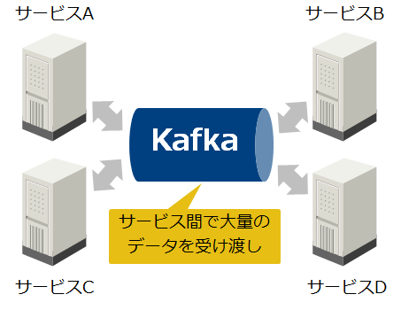
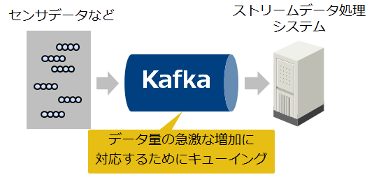

Apache Kafka¶
1．Apache Kafkaとは¶
Apache Kafka（以降、Kafka）はスケーラビリティに優れた分散メッセージキューである。メッセージキューとは、システム間のデータの受け渡しを仲介し、データを一時的に保持（キューイング）するミドルウェアのこと。メッセージキューを導入することには、以下のような利点がある。
メッセージキューを介してシステム間の通信を行うことで、システム間の接続経路を簡略化し、システムを疎結合に保つ。
システム間の通信を非同期化することで、データ流量の急激な増加によるシステムの負荷上昇を抑制する。
Kafkaは処理性能を重視したメッセージキューであり、複数台のマシンでクラスタを構成して分散処理を行うことで、高いスループットを発揮する。後からクラスタにマシンを追加することで、処理性能とデータ保持容量をスケールアウトすることもできる。また、Kafkaはクラスタ内でデータを複製するため、一部のマシンに障害が発生してもデータを失うことなく処理を継続できる。
2．Kafkaのユースケース¶
データハブの構築
複雑なシステムをサービス単位で分割して疎結合に保つことで、迅速な機能追加や不良修正が可能なマイクロサービスが多くの企業で導入されている。しかし、多数のサービス間で直接データを受け渡そうとすると接続経路が複雑になり、またデータ流量の急激な増加により、サービスの負荷が急増することがある。Kafkaはこのようなサービス間で、大量のデータを受け渡すためのハブとして活用されている。

ストリーミングアプリケーションの構築
Webサービスやネットワークに接続されたデバイスは、大量のデータをリアルタイムに生成する。このようなデータをリアルタイムに処理するストリーミングアプリケーションにおいて、データ量の急激な増加に対応するためのキューとしてKafkaが活用されている。

{kind=link}
{kind=link}
3.システム構成¶
Kafkaの全体アーキテクチャを以下に示す。
{kind=link}
Kafkaは複数のBrokerでクラスタを構成し、このクラスタ上にTopicと呼ばれる分散キューを構成する。Kafkaのメッセージはキーバリュー形式であり、Recordと呼ぶ。1つのTopicは、複数のBrokerに分散配置されたPartitionで構成されており、このPartition単位でRecordの書き込み/読み込みを行うことで、1つのTopicに対する並列書き込み/読み出しを実現する。Broker同士はクラスタコーディネータであるZooKeeperを使用して連携し、Brokerの１つがリーダーとなりBrokerクラスタを管理する。
KafkaはPub/Subメッセージングモデルを採用している。また、Kafkaは書き込み/読み出し性能を重視しており、Topicに対する書き込み/読み出しには、MQTTなどの標準プロトコルではなく、独自プロトコルを使用する。書き込み側のアプリケーション（Publisher）はProducerと呼ばれる書き込み用ライブラリを通じて、BrokerのTopicにRecordを書き込む。読み出し側のアプリケーション（Subscriber）はConsumerと呼ばれる読み出し用ライブラリを通じて、Recordを取り出す。Kafka本体に含まれているProducer/ConsumerライブラリはJava製だが、他にもサードパーティからPythonやC++など様々な言語製のライブラリが提供されており、様々なアプリケーションや機器に組み込むことができる。
Topicに書き込んだデータはBrokerのディスクに保存され、読み出されてもすぐには削除されない。そのため、同じTopicのデータを複数のアプリケーションから読み出すことができる。一定期間が経過したRecordや、Partitionの最大容量を超えた分のRecordは自動的に削除される。また、Partition 内のRecordはBroker間で複製されるため、一部のBrokerノードに障害が発生してもRecordが失われにくい仕組みになっている。
4.データ管理¶
Kafkaの論理/物理データ構造とその管理方法について説明する。
論理データ構造とデータ複製¶
Topic、Partition、Replica¶
1つのTopicは複数のPartitionで構成されており、各PartitionはBroker間で複製された複数のReplicaで構成される。各Partitionには1個のLeader Replicaと0個以上のFollower Replicaが存在し、Leader Replicaに書き込まれたRecordはFollower Replicaに複製される。
この複製方法はLeader/Follower型と呼ばれ、Replicaの複製数（1個のLeaderと0個以上のFollowerの合計数）をReplication Factorと呼ぶ。各Leader ReplicaはBrokerに均等に割り当てられ、Partitionへの書き込み/読み出しはLeader Replicaにのみ行う。Brokerノードの障害などでLeader Replicaが使用できなくなった際は、いずれかのFollower ReplicaがLeader Replicaに昇格する。
TopicのPartition数とReplication FactorはTopicの作成時に指定する。Brokerノード3台で1 Topic、3 Partition、Replication Factor = 3の場合の、データ構造の例を以下に示す。
{kind=link}
In Sync Replica（ISR）¶
Brokerやネットワークの問題により、LeaderからFollowerへの複製が遅延または停止して、LeaderとFollowerの内容が同期しなくなることがある。Kafkaのデフォルトの設定では、複製が追い付いていない状態が10秒間続いたFollowerは同期していないとみなされる。Brokerは常に「同期しているFollowerのリスト」を追跡しており、同期しているReplicaをIn Sync Replica（ISR）と呼ぶ。
ISRの最小数はTopicごとに設定することが可能で、現在のISR 数はPartitionごとに追跡される。あるPartitionのISR数が最小数を下回ると、そのPartition（のLeader Replica）はProducerから書き込み出来なくなる。ISR数が最小数まで回復すると、そのPartitionは再びProducerから書き込み出来るようになる。ISRの最小数まで書き込まれたRecordはコミットされたものとみなされ、ConsumerはコミットされたRecordのみを取得できる。
物理データ構造とデータ保存方法¶
Log、Segment¶
BrokerはTopicに書き込まれたRecordをファイルに保存することで永続化する。BrokerはReplica ごとにデータディレクトリを作成して、Recordは各ディレクトリ内のSegmentというファイルに書き込む。このSegmentファイルの集合を、KafkaではLogと呼んでいる。
通常、Brokerノードは複数台のディスクを搭載しており、各ディスクに対してラウンドロビン方式でReplicaのデータディレクトリを割り当てる。そのため、最低でもディスク台数分のReplicaがないとディスクを使い切れない（Replica数 = 全TopicのPartition数 * Replication Factor）。また、Partition間のデータのバランスが悪いと、ディスク間に負荷の不均衡が発生してしまう。
Segmentファイルのフラッシュ¶
Segmentファイルはファイルシステムが管理している。Linuxでは、ファイルシステムに書き込まれたデータは、ディスクに書き出されるまでメモリ上のページキャッシュに保持される。デフォルト設定では、KafkaはOSに対してディスクへの書き込み指示は行わず、OSがバックグラウンドでページキャッシュ上のデータを定期的にディスクへフラッシュするのに任せる。なお、フラッシュ後もメモリに余裕があれば、データはページキャッシュ上に残り続けるため、高速に読み出すことができる。
Brokerの設定により、一定期間または一定量のデータが書き込まれた際に、データを強制的にフラッシュすることも可能である。ただし、KafkaはBrokerノードが故障した際は別のBrokerノードのReplicaからデータを回復するため、ディスクへのデータ同期を必要とはしていない（他のノードのページキャッシュ上に複製されていればよいという考え方）。そのため、デフォルトのフラッシュ設定を使用することを推奨されている。
{kind=link}
Kafkaのツール¶
Kafkaに付属する主なツールについて、その概要を簡単に説明します。詳細についてはリンク先の公式ドキュメントを参照してください。
Kafka Connect
Kafka Connectを使用することで、DBなどの外部システムとKafka間でデータを書き込み/読み出しするコネクタを定義できる。Offsetの永続化など、Kafkaと外部システムを接続する際に必要な処理を簡素化してくれる。
Kafka Streams
Kafka Streamsは、Kafkaに格納されたデータを処理および分析するためのクライアントライブラリである。ウィンドウ処理などが可能であり、Spark StreamingやFlinkなどの並列分散処理フレームワークに相当する。
Miller Maker
Miller MakerはKafkaクラスタ間のミラーリングを行う。複数のデータセンタにクラスタを用意することで、データセンタ間でのバックアップが可能となる。Miller Makerの実体は一方のクラスタからConsumeしたRecordを他方のクラスタにProduceするクライアントアプリケーションであり、ミラーリングは非同期に行われる。そのため、フォールトトレランス機能としての使用は意図されていない。
Kafkaの機能¶
Kafkaの主な機能について記載する。
セキュリティ
KafkaはSSL/SASLを用いた接続認証、通信データの暗号化、クライアントによる読み取り/書き込み操作の認証などを提供している。
リソース割り当て制限（Quotas）
Quotasによりクライアントが使用するBrokerリソース（ネットワーク帯域幅およびネットワーク・ディスクI/OスレッドのCPU要求レート）を制御できる。
Logコンパクション
Logコンパクションを使用することで、各キーの最新Recordのみを保持できる（一定期間が過ぎたRecordを削除するのではなく、同じキーの最新Record以外を削除する）。この保存ポリシーはTopicごとに設定可能である。
モニタリング
KafkaはJMX (Java Management Extensions) により性能情報などのメトリックを公開している。JDK付属のjconsoleや、JMXに対応した監視ソフトウェアを使用することで、これらのメトリックを収集できる。
Recordの重複排除、トランザクション、エンドツーエンドのExactly-once保障
Kafka 0.11では以下の機能が追加された。
Producerは送信したRecordがコミットされたことを示す応答を、Brokerから受信できなかった場合にRecordを再送するため、Logに同じRecordが書き込まれる可能性がありる。Kafka 0.11では、Producerによって送信されるシーケンス番号を使用することで、この重複を排除する機能が追加された。
Kafka 0.11では、Producer/Consumerは複数のTopicにまたがるトランザクション機能が追加された。トランザクションを使用することで、あるTopicから読み出したRecordを変換処理して別のTopicに書き込む、といった一連の処理をアトミックに実行できる。
Kafkaはデフォルト設定において、At least once（データが重複する可能性があるが、欠損はしない）のRecord配信を保障している。Kafka 0.11では、Recordの重複排除やトランザクションなどの設定を行い、Kafka StreamsとKafka Connectを組み合わせることで、エンドツーエンドのExactly-onceのRecord配信（ProducerのRecord送信から、変換処理、外部DBへの出力までをRecordの欠損や重複なしに実行）が可能になった。